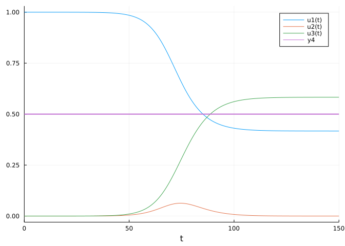
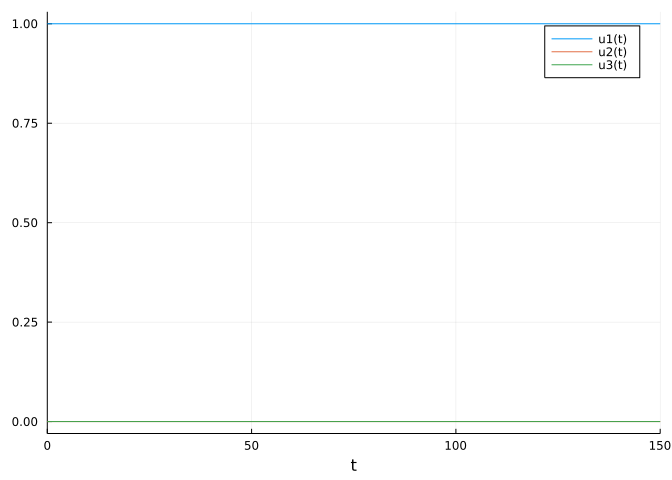
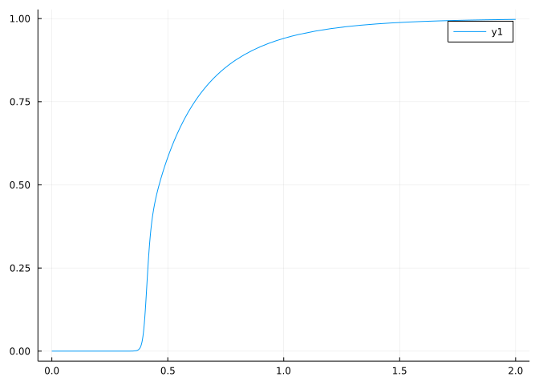
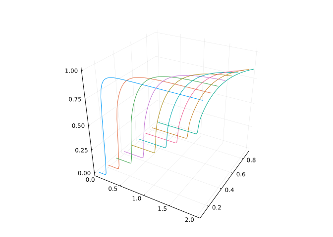
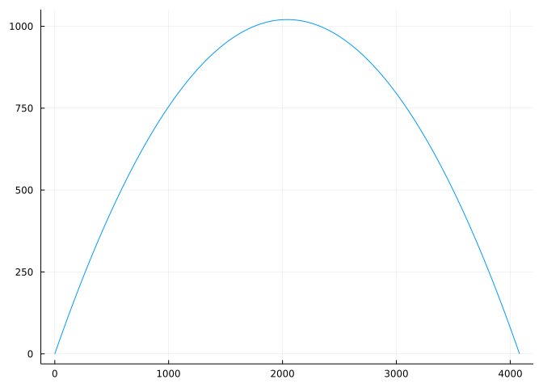
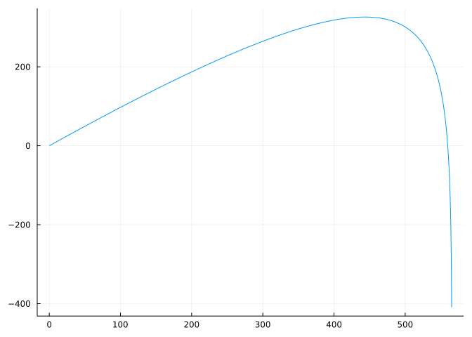
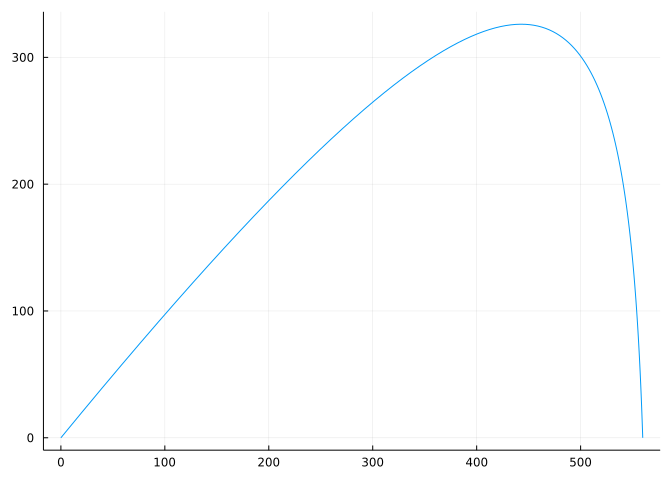

S0, I0, R0 = 7_900_000, 10, 0
N = S0 + I0 + R0
u0 = [S0, I0, R0]/N # initial proportions3-element Vector{Float64}:
0.9999987341788175
1.2658211825048323e-6
0.0DifferentialEquations suiteThis section uses these add-on packages:
using OrdinaryDiffEq
using Plots
using ModelingToolkitThe DifferentialEquations suite of packages contains solvers for a wide range of various differential equations. This section just briefly touches touch on ordinary differential equations (ODEs), and so relies only on OrdinaryDiffEq part of the suite. For more detail on this type and many others covered by the suite of packages, there are many other resources, including the documentation and accompanying tutorials.
We follow along with an introduction to the SIR model for the spread of disease by Smith and Moore. This model received a workout due to the COVID-19 pandemic.
The basic model breaks a population into three cohorts: The susceptible individuals, the infected individuals, and the recovered individuals. These add to the population size, \(N\), which is fixed, but the cohort sizes vary in time. We name these cohort sizes \(S(t)\), \(I(t)\), and \(R(t)\) and define \(s(t)=S(t)/N\), \(i(t) = I(t)/N\) and \(r(t) = R(t)/N\) to be the respective proportions.
The following assumptions are made about these cohorts by Smith and Moore:
No one is added to the susceptible group, since we are ignoring births and immigration. The only way an individual leaves the susceptible group is by becoming infected.
This implies the rate of change in time of \(S(t)\) depends on the current number of susceptibles, and the amount of interaction with the infected cohorts. The model assumes each infected person has \(b\) contacts per day that are sufficient to spread the disease. Not all contacts will be with susceptible people, but if people are assumed to mix within the cohorts, then there will be on average \(b \cdot S(t)/N\) contacts with susceptible people per infected person. As each infected person is modeled identically, the time rate of change of \(S(t)\) is:
\[ \frac{dS}{dt} = - b \cdot \frac{S(t)}{N} \cdot I(t) = -b \cdot s(t) \cdot I(t) \]
It is negative, as no one is added, only taken off. After dividing by \(N\), this can also be expressed as \(s'(t) = -b s(t) i(t)\).
assume that a fixed fraction \(k\) of the infected group will recover during any given day.
This means the change in time of the recovered depends on \(k\) and the number infected, giving rise to the equation
\[ \frac{dR}{dt} = k \cdot I(t) \]
which can also be expressed in proportions as \(r'(t) = k \cdot i(t)\).
Finally, from \(S(t) + I(T) + R(t) = N\) we have \(S'(T) + I'(t) + R'(t) = 0\) or \(s'(t) + i'(t) + r'(t) = 0\).
Combining, it is possible to express the rate of change of the infected population through:
\[ \frac{di}{dt} = b \cdot s(t) \cdot i(t) - k \cdot i(t) \]
The author’s apply this model to flu statistics from Hong Kong where:
\[ \begin{align*} S(0) &= 7,900,000\\ I(0) &= 10\\ R(0) &= 0\\ \end{align*} \]
In Julia we define these, N to model the total population, and u0 to be the proportions.
S0, I0, R0 = 7_900_000, 10, 0
N = S0 + I0 + R0
u0 = [S0, I0, R0]/N # initial proportions3-element Vector{Float64}:
0.9999987341788175
1.2658211825048323e-6
0.0An estimated set of values for \(k\) and \(b\) are \(k=1/3\), coming from the average period of infectiousness being estimated at three days and \(b=1/2\), which seems low in normal times, but not for an infected person who may be feeling quite ill and staying at home. (The model for COVID would certainly have a larger \(b\) value).
Okay, the mathematical modeling is done; now we try to solve for the unknown functions using DifferentialEquations.
To warm up, if \(b=0\) then \(i'(t) = -k \cdot i(t)\) describes the infected. (There is no circulation of people in this case.) The solution would be achieved through:
k = 1/3
f(u,p,t) = -k * u # solving u′(t) = - k u(t)
time_span = (0.0, 20.0)
prob = ODEProblem(f, I0/N, time_span)
sol = solve(prob, Tsit5(), reltol=1e-8, abstol=1e-8)
plot(sol)
The sol object is a set of numbers with a convenient plot method. As may have been expected, this graph shows exponential decay.
A few comments are in order. The problem we want to solve is
\[ \frac{di}{dt} = -k \cdot i(t) = F(i(t), k, t) \]
where \(F\) depends on the current value (\(i\)), a parameter (\(k\)), and the time (\(t\)). We did not utilize \(p\) above for the parameter, as it was easy not to, but could have, and will in the following. The time variable \(t\) does not appear by itself in our equation, so only f(u, p, t) = -k * u was used, u the generic name for a solution which in this case is \(i\).
The problem we set up needs an initial value (the \(u0\)) and a time span to solve over. Here we want time to model real time, so use floating point values.
The plot shows steady decay, as there is no mixing of infected with others.
Adding in the interaction requires a bit more work. We now have what is known as a system of equations:
\[ \begin{align*} \frac{ds}{dt} &= -b \cdot s(t) \cdot i(t)\\ \frac{di}{dt} &= b \cdot s(t) \cdot i(t) - k \cdot i(t)\\ \frac{dr}{dt} &= k \cdot i(t)\\ \end{align*} \]
Systems of equations can be solved in a similar manner as a single ordinary differential equation, though adjustments are made to accommodate the multiple functions.
We use a style that updates values in place, and note that u now holds \(3\) different functions at once:
function sir!(du, u, p, t)
k, b = p
s, i, r = u[1], u[2], u[3]
ds = -b * s * i
di = b * s * i - k * i
dr = k * i
du[1], du[2], du[3] = ds, di, dr
endsir! (generic function with 1 method)The notation du is suggestive of both the derivative and a small increment. The mathematical formulation follows the derivative, the numeric solution uses a time step and increments the solution over this time step. The Tsit5() solver, used here, adaptively chooses a time step, dt; were the Euler method used, this time step would need to be explicit.
The sir! function has the trailing ! indicating – by convention – it mutates its first value, du. In this case, through an assignment, as in du[1]=ds. This could use some explanation. The binding du refers to the container holding the \(3\) values, whereas du[1] refers to the first value in that container. So du[1]=ds changes the first value, but not the binding of du to the container. That is, du mutates. This would be quite different were the call du = [ds,di,dr] which would create a new binding to a new container and not mutate the values in the original container.
With the update function defined, the problem is setup and a solution found with in the same manner:
p = (k=1/3, b=1/2) # parameters
time_span = (0.0, 150.0) # time span to solve over, 5 months
prob = ODEProblem(sir!, u0, time_span, p)
sol = solve(prob, Tsit5())
plot(sol)
plot!(x -> 0.5, linewidth=2) # mark 50% line
The lower graph shows the number of infected at each day over the five-month period displayed. The peak is around 6-7% of the population at any one time. However, over time the recovered part of the population reaches over 50%, meaning more than half the population is modeled as getting sick.
Now we change the parameter \(b\) and observe the difference. We passed in a value p holding our two parameters, so we just need to change that and run the model again:
p = (k=1/2, b=2) # change b from 1/2 to 2 -- more daily contact
prob = ODEProblem(sir!, u0, time_span, p)
sol = solve(prob, Tsit5())
plot(sol)
The graphs are somewhat similar, but the steady state is reached much more quickly and nearly everyone became infected.
What about if \(k\) were bigger?
p = (k=2/3, b=1/2)
prob = ODEProblem(sir!, u0, time_span, p)
sol = solve(prob, Tsit5())
plot(sol)
The graphs show that under these conditions the infections never take off; we have \(i' = (b\cdot s-k)i = k\cdot((b/k) s - 1) i\) which is always negative, since (b/k)s < 1, so infections will only decay.
The solution object is indexed by time, then has the s, i, r estimates. We use this structure below to return the estimated proportion of recovered individuals at the end of the time span.
function recovered(k,b)
prob = ODEProblem(sir!, u0, time_span, (k,b));
sol = solve(prob, Tsit5());
s,i,r = last(sol)
r
endrecovered (generic function with 1 method)This function makes it easy to see the impact of changing the parameters. For example, fixing \(k=1/3\) we have:
f(b) = recovered(1/3, b)
plot(f, 0, 2)
This very clearly shows the sharp dependence on the value of \(b\); below some level, the proportion of people who are ever infected (the recovered cohort) remains near \(0\); above that level it can climb quickly towards \(1\).
The function recovered is of two variables returning a single value. In subsequent sections we will see a few \(3\)-dimensional plots that are common for such functions, here we skip ahead and show how to visualize multiple function plots at once using “z” values in a graph.
k, ks = 0.1, 0.2:0.1:0.9 # first `k` and then the rest
bs = range(0, 2, length=100)
zs = recovered.(k, bs) # find values for fixed k, each of bs
p = plot(bs, k*one.(bs), zs, legend=false) # k*one.(ks) is [k,k,...,k]
for k in ks
plot!(p, bs, k*one.(bs), recovered.(k, bs))
end
p
The 3-dimensional graph with plotly can have its viewing angle adjusted with the mouse. When looking down on the \(x-y\) plane, which code b and k, we can see the rapid growth along a line related to \(b/k\).
Smith and Moore point out that \(k\) is roughly the reciprocal of the number of days an individual is sick enough to infect others. This can be estimated during a breakout. However, they go on to note that there is no direct way to observe \(b\), but there is an indirect way.
The ratio \(c = b/k\) is the number of close contacts per day times the number of days infected which is the number of close contacts per infected individual.
This can be estimated from the curves once steady state has been reached (at the end of the pandemic).
\[ \frac{di}{ds} = \frac{di/dt}{ds/dt} = \frac{b \cdot s(t) \cdot i(t) - k \cdot i(t)}{-b \cdot s(t) \cdot i(t)} = -1 + \frac{1}{c \cdot s} \]
This equation does not depend on \(t\); \(s\) is the dependent variable. It could be solved numerically, but in this case affords an algebraic solution: \(i = -s + (1/c) \log(s) + q\), where \(q\) is some constant. The quantity \(q = i + s - (1/c) \log(s)\) does not depend on time, so is the same at time \(t=0\) as it is as \(t \rightarrow \infty\). At \(t=0\) we have \(s(0) \approx 1\) and \(i(0) \approx 0\), whereas \(t \rightarrow \infty\), \(i(t) \rightarrow 0\) and \(s(t)\) goes to the steady state value, which can be estimated. Solving with \(t=0\), we see \(q=0 + 1 - (1/c)\log(1) = 1\). In the limit them \(1 = 0 + s_{\infty} - (1/c)\log(s_\infty)\) or \(c = \log(s_\infty)/(1-s_\infty)\).
We now solve numerically the problem of a trajectory with a drag force from air resistance.
The general model is:
\[ \begin{align*} x''(t) &= - W(t,x(t), x'(t), y(t), y'(t)) \cdot x'(t)\\ y''(t) &= -g - W(t,x(t), x'(t), y(t), y'(t)) \cdot y'(t)\\ \end{align*} \]
with initial conditions: \(x(0) = y(0) = 0\) and \(x'(0) = v_0 \cos(\theta), y'(0) = v_0 \sin(\theta)\).
This into an ODE by a standard trick. Here we define our function for updating a step. As can be seen the vector u contains both \(\langle x,y \rangle\) and \(\langle x',y' \rangle\)
function xy!(du, u, p, t)
g, γ = p.g, p.k
x, y = u[1], u[2]
x′, y′ = u[3], u[4] # unicode \prime[tab]
W = γ
du[1] = x′
du[2] = y′
du[3] = 0 - W * x′
du[4] = -g - W * y′
endxy! (generic function with 1 method)This function \(W\) is just a constant above, but can be easily modified as desired.
The “standard” trick is to take a second order ODE like \(u''(t)=u\) and turn this into two coupled ODEs by using a new name: \(v=u'(t)\) and then \(v'(t) = u(t)\). In this application, there are \(4\) equations, as we have both \(x''\) and \(y''\) being so converted. The first and second components of \(du\) are new variables, the third and fourth show the original equation.
The initial conditions are specified through:
θ = pi/4
v₀ = 200
xy₀ = [0.0, 0.0]
vxy₀ = v₀ * [cos(θ), sin(θ)]
INITIAL = vcat(xy₀, vxy₀)4-element Vector{Float64}:
0.0
0.0
141.4213562373095
141.42135623730948The time span can be computed using an upper bound of no drag, for which the classic physics formulas give (when \(y_0=0\)) \((0, 2v_{y0}/g)\)
g = 9.8
TSPAN = (0, 2*vxy₀[2] / g)(0, 28.8615012729203)This allows us to define an ODEProblem:
trajectory_problem = ODEProblem(xy!, INITIAL, TSPAN)ODEProblem with uType Vector{Float64} and tType Float64. In-place: true timespan: (0.0, 28.8615012729203) u0: 4-element Vector{Float64}: 0.0 0.0 141.4213562373095 141.42135623730948
When \(\gamma = 0\) there should be no drag and we expect to see a parabola:
ps = (g=9.8, k=0)
SOL = solve(trajectory_problem, Tsit5(); p = ps)
plot(t -> SOL(t)[1], t -> SOL(t)[2], TSPAN...; legend=false)
The plot is a parametric plot of the \(x\) and \(y\) parts of the solution over the time span. We can see the expected parabolic shape.
On a windy day, the value of \(k\) would be positive. Repeating the above with \(k=1/4\) gives:
ps = (g=9.8, k=1/4)
SOL = solve(trajectory_problem, Tsit5(); p = ps)
plot(t -> SOL(t)[1], t -> SOL(t)[2], TSPAN...; legend=false)
We see that the \(y\) values have gone negative. The DifferentialEquations package can adjust for that with a callback which terminates the problem once \(y\) has gone negative. This can be implemented as follows:
condition(u,t,integrator) = u[2] # called when `u[2]` is negative
affect!(integrator) = terminate!(integrator) # stop the process
cb = ContinuousCallback(condition, affect!)
ps = (g=9.8, k = 1/4)
SOL = solve(trajectory_problem, Tsit5(); p = ps, callback=cb)
plot(t -> SOL(t)[1], t -> SOL(t)[2], TSPAN...; legend=false)
Finally, we note that the ModelingToolkit package provides symbolic-numeric computing. This allows the equations to be set up symbolically, as in SymPy before being passed off to DifferentialEquations to solve numerically. The above example with no wind resistance could be translated into the following:
@parameters t γ g
@variables x(t) y(t)
D = Differential(t)
eqs = [D(D(x)) ~ -γ * D(x),
D(D(y)) ~ -g - γ * D(y)]
@named sys = ODESystem(eqs)
sys = ode_order_lowering(sys) # turn 2nd order into 1st
u0 = [D(x) => vxy₀[1],
D(y) => vxy₀[2],
x => 0.0,
y => 0.0]
p = [γ => 0.0,
g => 9.8]
prob = ODEProblem(sys, u0, TSPAN, p, jac=true)
sol = solve(prob,Tsit5())
plot(t -> sol(t)[3], t -> sol(t)[4], TSPAN..., legend=false)The toolkit will automatically generate fast functions and can perform transformations (such as is done by ode_order_lowering) before passing along to the numeric solves.